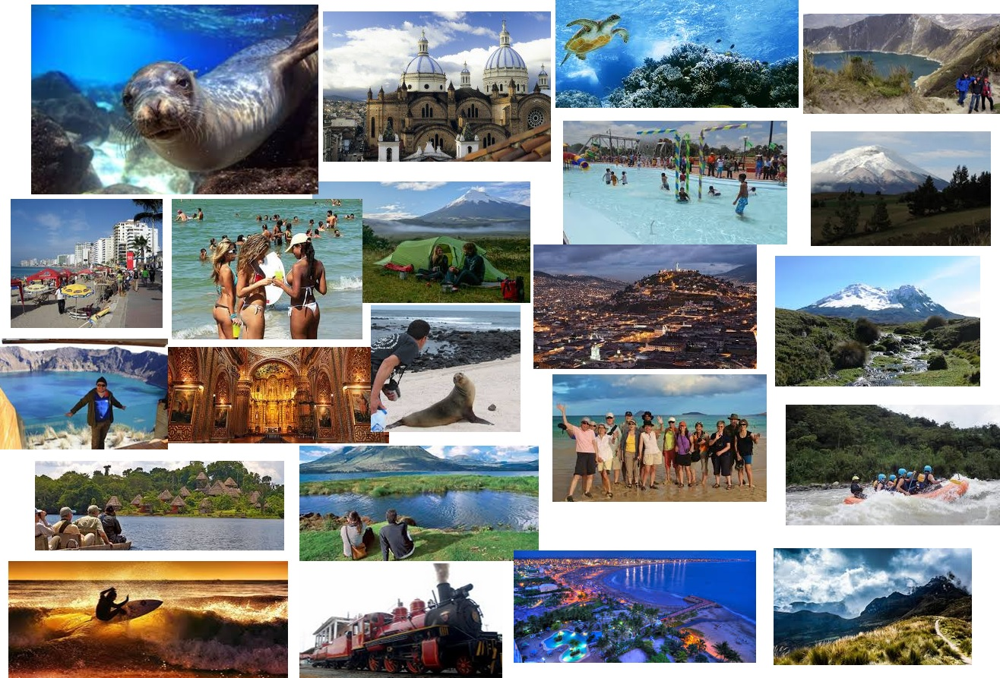

GUÍA TURISTICO DEL ECUADOR
HISTORIA: GUÍA TURISTICA
LUGARES TURISTICOS
GASTRONOMIA DE ECUADOR
ACTIVIDADES EN ECUADOR
CULTURA
LUGARES INCREIBLES DE LA COSTA ECUATORIANA
Bucay
Naranjal
Guayaquil
Salinas
Montañita
